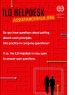

Labour - Guidance Material
-
General
-
Child Labour
-
Forced Labour
-
Non-Discrimination and Diversity
-
Supply Chain Management
-
Other Labour Issues
-
Grievance mechanisms
-
Training Material
1. General
The Labour Principles of the United Nations Global Compact: A Guide for Business
|
 |
2009 - As the first publication of the Global Compact Labour Working Group, the Guide aims at
helping companies understand and put the four labour principles into practice. In a question and
answer format, the Guide provides a brief description of each labour principle, and provides
practical guidance on what companies can do to respect, promote, and realize them. It also contains
an inventory of key International Labour Organisation resources that will help companies
operationalize the labour principles.
|
|
|
ILO Helpdesk
|
|
 |
The ILO Helpdesk is a new service from the International Labour Office that provides a
one-stop-shop to help company managers and workers understand the application of international
labour standards. Replies are prepared by a multi-disciplinary team, ensuring that users receive a
comprehensive response. To submit a question to the Helpdesk, send an email to
assistance@ilo.org.
|
|
|
Rules of the Game: a brief introduction to International Labour Standards
|
|
2009 - This introduction, first published in 2005, was developed to instigate a better
understanding of the essence of the ILO Conventions and Recommendations, the application and
supervision of international labour standards, and their importance in the global economy.
|
|
|
GRI Labour Practices and Decent Work Indicators
|
|
2009 - This introduction, first published in 2005, was developed to instigate a better
understanding of the essence of the ILO Conventions and Recommendations, the application and
supervision of international labour standards, and their importance in the global economy.
|
|
|
2. Child Labour
ILO: Eliminating Child Labour – Guides for Employers
|
|
A set of three guides to help companies and employer organizations understand and take action
against child labour. Guide 1 explains what child labour is; its causes; its consequences and
four reasons why companies should eliminate child labour. Guide 2 explains from a business point of
view what can be done to abolish child labour. It includes the basic elements of a child
labour strategy; analysing the situation; designing the strategy; immediate actions: hiring,
hazards and hours; supporting child and household welfare; eliminating the need for child labour;
eliminating child labour in the supply chain; using a code of conduct; auditing, monitoring and
certification. Guide 3 is for employer organizations. These guides have been produced by the Bureau
for Employers' Activities, International Labour Office and the International Organisation of
Employers (IOE). |
|
|
IPEC: Child Labour Monitoring Resource Kit
|
|
December 2005 - This resource developed by the ILO International Programme on the Elimination of
Child Labour (IPEC), provides information on how to design, develop and operate child labour
monitoring systems along with practical examples that will help to adapt the model to specific
child labour situations. The kit includes: a brochure on child labour monitoring; an overview of
child labour monitoring; and guidelines for developing child labour monitoring processes.
|
|
|
UNICEF UK: Child Labour Resource Guide
|
|
This publication is designed to help businesses establish an appropriate response when they
suspect or find that children might be working for them or their suppliers. It will also help
businesses entering new markets or product areas within which there may be a risk of child labour
being present. This web-based resource is available free of charge. |
|
|
IFC: Good Practice Note on Addressing Child Labour in the Workplace and Supply Chain
|
| June 2002 - The Practice Note, developed by the International
Finance Corporation (IFC) seeks to provide companies with a range of basic, successful
business practices applied in addressing the issue of harmful child labor in their own workplaces
and those of their vendors and suppliers. |
|
|
3. Forced Labour
ILO: The Cost of Coercion
|
|
2009 - This report examines the challenges faced by the global alliance against forced labour.
It demonstrates how these challenges are met through a combination of best practices, law
enforcement and prevention mechanisms.
|
|
|
ILO: Combating forced labour - A handbook for employers and business
|
|
This handbook seeks to meet the needs of employers’ organisations and individual companies
worldwide for guidance on addressing forced labour and human trafficking. It provides practical
tools and material for business actors of all kinds, identifying what is and is not forced labour,
why it is a significant concern for business, and the actions that can be taken to address
it. |
|
|
UN.GIFT: Human Trafficking - The Facts
|
|
A fact sheet by the United Nations Global Initiative to Fight Human Trafficking (UN.GIFT) on the
issue of human trafficking. The data covers geographic regions, demographics of victims, and the
estimated profits made from trafficking.
|
|
|
UN.GIFT: Human Trafficking - Background Briefing Note
|
|
This short document by the United Nations Global Initiative to Fight Human Trafficking (UN.GIFT)
helps explain human trafficking in further detail, outlines the scale of the problem, and describes
how businesses may encounter the problem or be implicated. A short description of the Protocol to
Prevent, Suppress and Punish Trafficking in Persons, especially Women and Children is also
included.
|
|
|
ILO: Combatting Forced Labour – Questions & Answers
|
|
This publication outlines causes and different forms of forced labour, presents international
standards for its elimination and suggest some solutions to the problem.
|
|
|
ILO: A Global Alliance against Forced Labour
|
|
This report is designed to deepen the reader's understanding of forced labour. It includes
information about key global trends, developments and global action to combat forced labour. The
report is available in all UN languages.
|
|
|
ILO: Forced Labour Statistics
|
|
This publication provides key figures and statistics about forced labour.
|
|
|
ILO: Trafficking for Forced Labour
|
|
January 2006 - This training manual aims to raise awareness among labour inspectors, police,
government officials, employers’ organizations, trade unions and others, on trafficking, forced
labour and job placement systems. The manual follows a generic approach, but its materials are
adaptable to different situations, types of participants and different national contexts.
|
|
|
SMWIPM Initiative: End Human Trafficking Now! - Athens Ethical Principles
|
|
Adapted in Athens on 23 January 2006 to engage the worldwide business community to participate
in anti-trafficking efforts, seven principles outline action plans for business to contribute to
the eradication of human trafficking.
|
|
|
4. Non-Discrimination and Diversity
ILO: Managing Disability in the Workplace
|
|
A guide for employers in adopting positive strategies for managing disability-related issues in
the workplace. It also addresses the essential role played by governments as well as the importance
of initiatives taken by persons with disabilities. It is designed to promote the safe and healthy
employment of all disabled persons.
|
|
|
ILO: Toolkits - Promoting Equality and Diversity, Integration in Europe
|
|
The employers and trade union materials (practical guidance toolkits and motivational pamphlets)
are intended for adaptation, translation and distribution in specific national and local contexts
across Europe.
|
|
|
Equal Opportunities Company - Good Practice Guide
|
|
This book offers examples of measures, projects and initiatives implemented by employers
striving to create equal opportunities for women and men. The content is presented in the context
of general human resource management and grouped into the following sections: ethical norms,
employee recruitment and development, compensation policies, work-life balance, counteracting
sexual harassment and mobbing, and other measures promoting gender equality.
|
|
|
IFC: Good Practice Note on Non-Discrimination & Equal Opportunity
|
|
A Practice Note by the International Finance Corporation (IFC) seeking to help companies
increase their understanding of the issue in a number of key areas: recognizing types of
discrimination; how and where it can occur in the workplace; obligations under national law and
other international provisions; practical approaches and options for addressing workplace
discrimination; benefits derived from diversifying the workforce.
|
|
|
5. Supply Chain Management
Responsible Supply Chain Management
|
| This secure web-based database provides members an opportunity to
share information on ethical and responsible supply chain management. After creating a
confidential account, a supplier can upload and share audit reports, self-assessment and
certification. The database enables companies with large supply chains to track, manage, risk
assess and report on supplier and supply chain information. |
|
|
The Business and its Supply Chain: a Management Alternative
|
| Produced by the Global Compact Local Network Spain, this guide
assists companies in identifying and assessing potential risks in their supply chain. In addition
to identifying the potential competitive advantage gained in managing supply chain issues, it
includes a risk assessment tool with a particular emphasis on managing reputation risk. There is
also a four-step process to guide companies who want to conduct an assessment of their own supply
chain. |
|
|
6. Other Labour Issues
Managing Labor Issues in Infrastructure Projects
|
| February 2009 - This guidance material provides recommendations for
companies engaged in private sector projects. It is directed toward project staff conducting due
diligence, supervision, or monitoring of labour aspects at the operational level. The guide covers
all Global Compact Labour Principles as based on the ILO Core Conventions. Also included are ILO
conventions addressing wages, working conditions and employee benefits. For each convention, the
guide uses a simple four point reference system. While special attention is given to
infrastructure projects, the checklist can be applied to other business projects. |
|
|
From Words to Action: A Business Case for Implementing Workplace Standards Experiences from Key
Emerging Markets
|
2009 - Voluntary standards such as codes of conduct are one
effective tool for implementing labour standards. In particular, they can complement existing
labour standards in those emerging markets where legal frameworks and enforcement may be
inadequate. The guide illustrates how SA8000, has been used by companies to achieve compliance with
labour standards. Through case studies of companies in China, India and Turkey, the guide
demonstrates how SA8000 was integrated into company operations, and identifies the business
benefits of receiving SA8000 certification.
|
|
|
IFC: Good Practice Note on Managing Retrenchment
|
| August 2005 - This practice note provides guidance for companies,
especially those operating in emerging markets, on how best to plan and manage significant job
losses. A well-managed process can help avoid a host of problems and result in better outcomes for
the company, its employees, and the wider community. It contains a range of good practice measures
that can help companies think through the key issues, avoid common pitfalls and hidden problems,
and design a comprehensive retrenchment plan. |
|
|
Local Resources Network
|
| An online community for individuals and organizations engaged in
efforts to improve working conditions in factories, farms and work sites worldwide. The network is
intended to link corporate and NGO members, sourcing from developing countries with Local Resources
who have expertise in conducting workplace remediation. Local Resources can be Non Governmental
Organisations (NGOs), Trade Unions, auditors, social scientists, charities or specialists in child
labour remediation or other relevant topics. |
|
|
Workers' Accommodation: Processes and Standards
|
| Developed jointly by the IFC and the European Bank for Reconstruction
and Development (EBRD), this guidance note is meant to advise companies, IFC and EBRD experts,
consultants, and other stakeholders who, due to the nature of their business, must address issues
of worker housing. The note also provides practical advice on issues of construction, planning,
management and upkeep of such housing facilities. |
|
|
| |
IFC: Good Practice Note on HIV/AIDs in the Workplace
|
This good practice note introduces the issue of HIV/AIDs in terms of
how the health crisis impacts companies in the workplace. Specifically, it discusses what costs
HIV/AIDs can impose upon a company and what strategies and policies a company can undertake to
raise awareness as well as how a company can apply prevantative measures or treatment plans for
affected employees.
|
|
|
7. Grievance mechanisms
Rights-Compatible Grievance Mechanisms: A guidance Tool for Companies and their
Stakeholders
|
| January 2008 - This guidance, developed by the Kennedy School at
Harvard University, helps companies to introduce or strengthen existing grievance mechanisms to
make them more effective so that the opportunities to achieve sustainable solutions to disputes are
realized. |
|
|
BASESwiki: A Dispute Resolution Community
|
| BASESwiki is an online resource which aims to help Business And
Society Explore Solutions (BASES) to human rights grievances and disputes. BASESwiki
provides a place for users to share information and learn about a range of non-judicial grievance
mechanisms that exist around the world including: global, regional, national and local grievance
mechanisms; industry and multi-stakeholder grievance mechanisms; and company or project based
grievance mechanisms. |
|
|
8. Training Material
Labour Working Group Presentations
|
|
The following presentations were part of the Labour Working Group Meeting held in Istanbul,
June 2009 in conjunction with the Annual Local Networks Forum.
|
|
|
(Last updated: 12 November 2009)